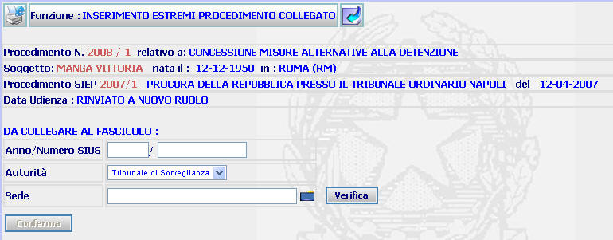
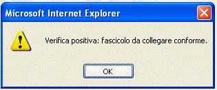
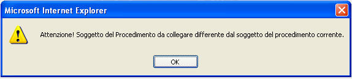

INSERIMENTO ESTREMI PROCEDIMENTO COLLEGATO: La funzione consente di inserire gli estremi del procedimento del TDS o di uno degli UDS del Distretto di appartenenza, relativo al medesimo soggetto, che si vuole collegare a quello corrente.
LE MASCHERE VIDEO
La funzione in esame viene realizzata attraverso la maschera seguente

COME FARE PER ...
| Per visualizzare il dettaglio del procedimento Sius l'utente deve cliccare sul link relativo all'Anno/Numero del procedimento Sius evidenziato in rosso; |

| Per visualizzare il dettaglio del soggetto l'utente deve cliccare sul link relativo al cognome/nome del soggetto evidenziato in rosso; |

| Per visualizzare il dettaglio del procedimento Siep l'utente deve cliccare sul link relativo all' Anno/Numero del procedimento Siep evidenziato in rosso; |

| Per inserire gli estremi del procedimento da collegare, l'utente deve: |
1. compilare i campi presenti nella sezione "da collegare al fascicolo"
2. selezionare il bottone , per verificare che i due procedimenti siano riferiti al medesimo soggetto
3.
nel caso in cui il sistema verifichi la
conformità dei due procedimenti, selezionare il bottone
 nella popup sottostante
nella popup sottostante

4.
selezionare il bottone

CAMPI
I campi da compilare sono i seguenti
| NOME | DESCRIZIONE |
| Anno/Numero SIUS | compilare il campo con l'anno ed il numero del procedimento Sius da collegare |
| Autorità | consente di inserire, attraverso l'apposita tendina, il tipo di Autorità (TDS o UDS) alla quale fa capo il procedimento da collegare |
| Sede |
consente di inserire la sede dell'Autorità (TDS o UDS) alla quale fa capo
il procedimento da collegare (digitandola per intero o selezionandola
attraverso l'apposito
Pulsante di Ricerca da Lista Predefinita |
PULSANTI
Oltre ai pulsanti
 e
e

|
PULSANTE |
DESCRIZIONE |
|
|
A fronte di tale comando, il sistema visualizza la lista predefinita. |
BOTTONI
Oltre ai comandi funzionali relativi al menù verticale sono presenti i seguenti comandi:
|
COMANDI |
DESCRIZIONE |
|
|
A fronte di tale comando, il sistema verifica che i procedimenti da collegare siano riferiti al medesimo soggetto |
|
|
A fronte di tale comando, il sistema, dopo aver verificato la validità dei dati specificati, presenta il dettaglio estremi procedimento collegato |
CONTROLLI
Azionando il bottone di , il sistema verifica che i procedimenti da collegare siano riferiti al medesimo soggetto, fornendo in caso contrario il seguente messaggio
